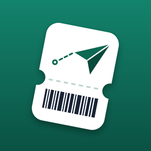

Tell Wordmile your exam or trip date and your level. It turns that into a daily word plan, and you learn from your Lock Screen and Home Screen widgets — a new word every time you look.
Lock Screen: touch and hold the Lock Screen, tap Customise, choose the Lock Screen, tap the widget area and add Wordmile. Home Screen: touch and hold an empty area, tap Edit → Add Widget and search for Wordmile. In the app, Settings → Widgets → Add widgets walks you through it.
The level test, your plan, reviews and both widgets are always free. Free learns up to 10 new words a day; Pro follows your plan's pace so you arrive on time, and adds your own words, unlimited practice, widget themes and new AI sentences on supported iPhones.
Open Settings in the app and tap Restore purchases, signed in with the same Apple Account you bought with.
iPhone Settings → your name → Subscriptions → Wordmile Pro. Lifetime is a one-time purchase and has nothing to cancel.
No. Wordmile works offline and keeps everything on your iPhone.
Write to alperenkr28@gmail.com with your iPhone model and iOS version.
Sınav ya da seyahat tarihini ve seviyeni ver; Wordmile bunu günlük kelime planına çevirir, kelimeleri kilit ekranı ve ana ekran widget'larından öğrenirsin.
Kilit ekranı: kilit ekranına basılı tut, Özelleştir'e dokun, kilit ekranını seç, widget alanına dokunup Wordmile'ı ekle. Ana ekran: boş bir yere basılı tut, Düzenle → Widget Ekle'ye dokun ve Wordmile'ı ara. Uygulamada Ayarlar → Widget'lar → Widget ekle adım adım gösterir.
Seviye testi, plan, tekrarlar ve iki widget da her zaman ücretsiz. Ücretsiz sürümde günde en fazla 10 yeni kelime; Pro planının temposuyla ilerler, böylece tarihine yetişirsin. Ayrıca kendi kelimelerin, sınırsız pratik, widget temaları ve destekleyen iPhone'larda yeni AI cümleleri.
Uygulamada Ayarlar'ı açıp Satın alımları geri yükle'ye dokun; satın aldığın Apple Hesabıyla giriş yapmış ol.
iPhone Ayarlar → adın → Abonelikler → Wordmile Pro. Ömür boyu tek seferlik bir satın almadır, iptal edilecek bir şey yoktur.
Hayır. Wordmile çevrimdışı çalışır ve her şeyi iPhone'unda tutar.
iPhone modelini ve iOS sürümünü yazarak alperenkr28@gmail.com adresine ulaş.